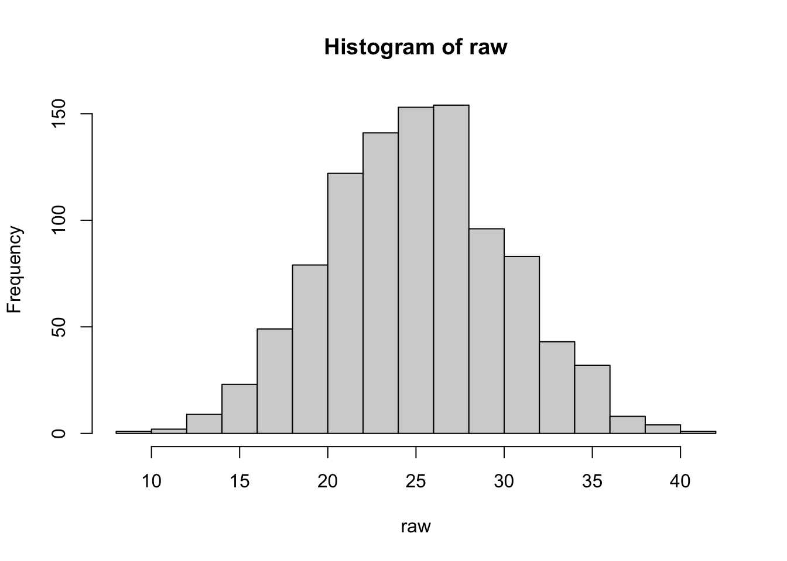
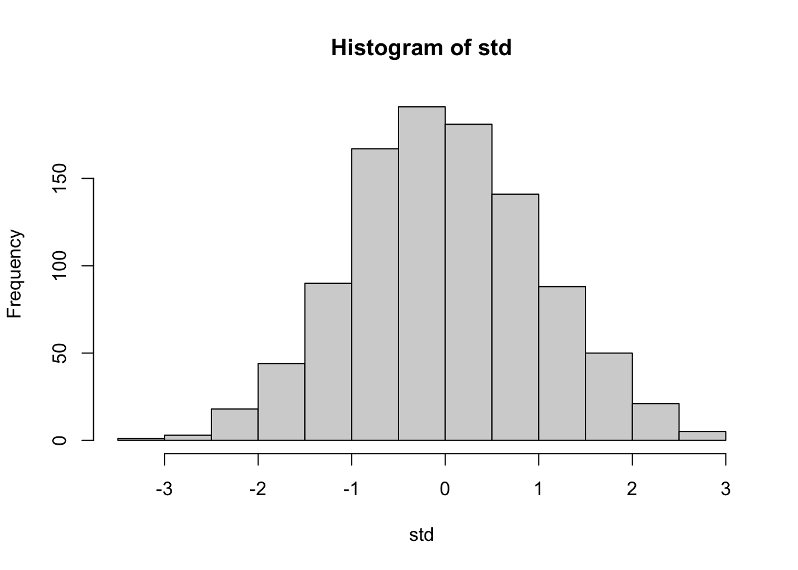

Unit testing was a concept I had never even heard of before I started my second data science job. It never came up in any of my college statistics or computer science courses. It never came up in any of my data science internships. It never came up in my first data science job.
In conversations I have with friends – and, broadly, conversations with basically anyone doing data science or analytics – I face lots of pushback when it comes to unit testing. Usually the objections come in the form of either not knowing why you might test, since the code is just so simple and straightforward that nothing could go wrong, or not understanding the value added. In my opinion, both of these objections come from the same place. At first glance, it seems like some combination of blissful ignorance about what could go wrong and overconfidence in one’s own ability or in their code’s correctness, but I think that the objections actually come from something deeper. In my opinion, it’s the unfamiliarity of testing. It’s not something that’s commonly taught to people involved in analytics, and so it feels new. That can be scary.
What’s A Unit Test?
First thing’s first: What’s a unit test? It’s actually really simple! Unit testing tests the smallest possible components of your code for correctness and what I would define as “good behavior.” In analytics, you might test things like feature engineering steps, metric definitions, or data wrangling code. The basic idea of a unit test is that you take a function you’ve written, and you’d make up some inputs to the function and then check if your code produces the outputs you’d expect. In the simplest case, you might test the identity function as follows:
All we’re doing here is checking that for some given input, our function returns the expected (correct) output. You can also test that your function returns an error or warning, returns nothing, returns some output, and much more. I’d highly recommend looking at the documentation for testthat or pytest to get a sense for what and how to test.
Case Study: Feature Engineering
Data scientists very often write feature engineering code. And as it turns out, feature engineering is a very common place where bugs can pop up unbeknownst to the code’s author.
It’s important to note that data scientists are usually writing Python or R, which are both dynamically typed, interpreted languages. Unit testing is doubly valuable in these types of languages, since you don’t get the benefits of a compiler and static type checks to catch issues in your code. In languages like Python and R, anything can go wrong in your code. And you often won’t find out about issues until runtime, or, depending on the nature of the bug, even later (if ever).
An Example
Let’s write some example code to create a simple feature to use in a hypothetical machine learning model downstream.
This might look familiar: It’s a function that takes a variable x and standardizes it. Now I’ll generate some data to show how it works.
## 1000 draws from a Normal(25, 5)raw <-rnorm(1000, mean =25, sd =5)
We can plot a histogram of our data to show what it looks like:
hist(raw, breaks =20)

Now, let’s run raw through our feature engineering function.
std <-create_feature(raw)hist(std, breaks =20)

Great! Now std, the new variable that we created from standardizing raw, looks like it follows a standard normal distribution.
Trivial Examples, Unexpected Results
Now that we’ve written a function to create a feature, let’s use that feature engineering step on a couple of real-world examples. Keep in mind that as data scientists, we’re often working with messy data – it could include missing values, outliers, data of an incorrect type, etc. and there are often very few guarantees about what our data will look like in practice. These next few examples show how things could go wrong (often very quietly) in our seemingly correct feature engineering step we wrote above.
Missings
Let’s do the simplest thing first: What happens when we have missing values in our data?
create_feature(c(1, 2, 3, NA_real_))
[1] NA NA NA NA
If you’re familiar with R, this should be expected. And you’re probably thinking to yourself that we just need to set na.rm = TRUE, and you’d be right! But this brings me to the first major point I’d like to make on how things can go wrong.
When you’re writing your code, it’s easy to forget things like adding na.rm = TRUE when the data you’re working with doesn’t appear to need it. It’s probably not your default behavior to remember to always set the flag to tell R to remove NA values, since if you’re not working with any of them, why would you remember to do that? Expecting yourself to remember to do something like this is a recipe for very brittle, error-prone code.
Looks good. Now all of our non-missing values have been correctly transformed.
Zero Standard Deviation
How about another non-trivial bug: A standard deviation of zero. Consider a toy example: Predicting whether or not someone plays basketball.
In this example, let’s say we have both men and women in our training data, and we want to use the height of each person to predict whether that person plays basketball. It probably doesn’t make sense to standardize the heights without grouping, since we don’t want to end up with a distribution of heights where most of the women are below average and most of the men are above average. It’d be much smarter to standardize within group, which would then produce a measure of height relative to the “competition” in some sense. Let’s give that a shot on a trivial data set where every man is the same height.
So what happened here? In the male group, all of the heights were the same. This resulted in a standard deviation of zero when we went to standardize our height variable, which meant dividing by zero. So we get NaN back – Not a Number.
This example feels trivial, but in practice it’s not. If your data had hundreds or thousands of groups, it’s not all that unlikely to have a situation like this. And note that R doesn’t throw any kind of warning or error, it just quietly returns you NaN when you’re expecting a real number.
Infinity
R also has a built in value for infinity: Inf. What happens if we try to build our feature when we had an Inf in our data?
create_feature(c(1, 2, 3, Inf))
[1] NaN NaN NaN NaN
A bunch of NaN. This seems trivial too, but imagine the following example, which you very well might run into in the real world: Computing GDP per capita.
data <-tibble(gdp =c(1000, 2000, 3000),population =c(0, 50, 100))data %>%mutate(gdp_per_capita = gdp / population ) %>%mutate(gdp_per_capita_std =create_feature(gdp_per_capita) ) %>%pretty_print()
gdp
population
gdp_per_capita
gdp_per_capita_std
1000
0
Inf
NaN
2000
50
40
NaN
3000
100
30
NaN
R doesn’t yell at you for dividing by zero unlike Python for instance, or virtually any other self-respecting programming language. This means that if you accidentally divide by zero somewhere in your data pipeline, you could very well end up with a bunch of NaN if you standardize. And working with real-world data means that dividing by zero happens fairly often, generally because of small issues in the data we’re working with.
One Row Per Group
Back to grouping: It’s also pretty likely when working with real-world data that you might have a group with only one row. Let’s see what happens in that case.
Once again, same issue. A single-row group returns NA, since the standard deviation of a single number isn’t defined.
Lessons
What have we learned here?
In short, there are many ways for things to quietly go wrong in your data pipelines, especially in a language like R. Even with a function as simple as standardization, it’s easy to cook up all kinds of possible corner cases or other issues that would cause your function to return any number of unpredictable results. And when working with real-world data, some of these quirks are inevitable. It’s virtually impossible that you’d never run into any of the issues enumerated above when working with messy data for any amount of time. And these examples were about as simple as they could be. In the real world, analytical code is often far more complicated and data far messier than this, which compounds the likelihood of issues like these.
Enter Testing
And with all of that: Back to testing. Testing is the only way to know that your code is actually doing what you think it’s doing, and writing tests is a great way to make guarantees about the ability of your code to handle some of these issues that we’ve discussed. Writing tests also lets you ensure that your implementation is correct, and it lets you refactor your code more easily by loudly alerting you if you’ve broken something, which should make you much more confident in the correctness of your implementation.
If you’re not familiar with it, this is a good point to introduce Test-Driven Development. It’s not something I would always recommend, but at least being familiar with it might make for a good starting point when it comes to learning how to think about writing tests for your code
Testing Our Standardization Function
And with that, let’s write some tests. Imagine that we knew that we wanted to write our feature engineering function to do standardization. We also know that we want to avoid some of the bugs that we introduced in the examples above. One possible option for handling those cases where our function will do something unexpected would be to throw an error if we get unexpected inputs. That’s what I’ll illustrate here – it’d let the user learn about the issue quickly and debug. There are many options for how to handle these issues though. You might also fall back on a default value when your code will return a NA or NaN, for instance. Now, on to the tests.
library(testthat)test <-function() {test_that("Standardized variable is transformed correctly", { random_normal <-rnorm(1000, 10, 5)## Expect that the mean of the transformed data is within## 0.005 of zeroexpect_lt(abs(mean(create_feature(random_normal))),0.005 )## Expect that the stddev of the transformed data is within## 0.005 of 1expect_lt(abs(1-sd(create_feature(random_normal))),0.005 )## Expect that the math is done correctlyexpect_identical(create_feature(c(1,2,3)),c(-1, 0, 1) ) })test_that("Inifinity causes an error", {expect_error(create_feature(c(1, 2, 3/0)),"`x` must not contain any infinite values" ) })test_that("Zero stddev causes an error", {expect_error(create_feature(c(1, 1, 1)),"`x` must have a non-zero standard deviation" ) })test_that("Length one causes an error", {expect_error(create_feature(c(1)),"`x` must have more than one unique element" ) })}
And now let’s run our test suite.
test()
Test passed 🥳
── Failure (<text>:29:5): Inifinity causes an error ────────────────────────────
`create_feature(c(1, 2, 3/0))` did not throw an error.
Error in `reporter$stop_if_needed()`:
! Test failed
Unsurprisingly, we get some failures. So now let’s refactor our feature engineering function to pass our tests.
library(rlang)create_feature <-function(x) { mu <-mean(x, na.rm =TRUE) sigma <-sd(x, na.rm =TRUE)if (isTRUE(sigma ==0)) abort("`x` must have a non-zero standard deviation.")if (isTRUE(length(unique(x)) == 1L)) abort("`x` must have more than one unique element.")if (isTRUE(any(is.nan(x)))) abort("`x` must not contain any `NaN` values.")if (isTRUE(any(is.infinite(x)))) abort("`x` must not contain any infinite values.") (x - mu) / sigma}test()
Test passed 🥳
Test passed 🥳
Test passed 🥳
Test passed 🥳
Woohoo! Our tests all passed. Now, if the user of our function tries to do something like only providing a single value for x, they get an informative error back.
create_feature(c(1))
Error in `create_feature()`:
! `x` must have more than one unique element.
In a less trivial example, consider our grouped computation from before:
Error in `mutate()`:
ℹ In argument: `value_std = create_feature(value)`.
ℹ In group 1: `group = 1`.
Caused by error in `create_feature()`:
! `x` must have more than one unique element.
Not only do we get a helpful error, but in this particular case dplyr also adds helpful context: It tells us which step failed and which group it failed on so that we can effectively debug.
Refactoring
Now that we have a test suite, we can also refactor our function and be much more confident that we haven’t broken anything. Let’s do an overly complicated refactor.
create_feature <-function(x) {## Compute the mean as the sum of the non-null elements ## divided by the number of non-null elements mu <-sum(x, na.rm =TRUE) /length(na.omit(x)) sigma <-sd(x, na.rm =TRUE)if (isTRUE(sigma ==0)) abort("`x` must have a non-zero standard deviation.")if (isTRUE(length(unique(x)) == 1L)) abort("`x` must have more than one unique element.")if (isTRUE(any(is.nan(x)))) abort("`x` must not contain any `NaN` values.")if (isTRUE(any(is.infinite(x)))) abort("`x` must not contain any infinite values.") (x - mu) / sigma}
And now let’s run our tests again.
test()
Test passed 🥳
Test passed 🥳
Test passed 🥳
Test passed 🥇
Awesome! We just did a simple refactor and our tests passed, so I feel good about the correctness of that refactor. This was a very simple example, but you could imagine arbitrarily complex refactors. The value of a test suite increases exponentially as the complexity of the code increases.
Wrapping Up
There are a few important takeaways from this post.
First and most importantly, it’s important to test your code. There are so many ways that things can go wrong, and writing tests is the only way to really be confident that nothing is. This is especially true in dynamically typed, interpreted languages like R or Python, where data scientists don’t get the benefits of a compiler or a static type system to catch bugs in their code.
Second, analytical code that’s well-written should be easy to test. Ultimately, lots of the code we write for analytics work takes some data, does something to it, and returns some new data. That type of logic makes for a great use case for unit testing: If your code doesn’t produce the values you expect, it’s incorrect.
Lastly, there are many tools in Python (pytest, unittest, etc.) and R (testthat) to make unit testing as simple as writing a few lines of logic and an assertion or two. And then you get all the benefits of having well-tested code, such as the newly-found ease of refactoring said code without being concerned about breaking it.